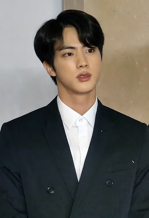
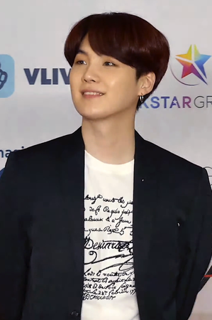
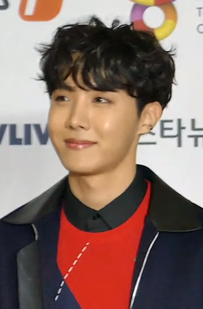
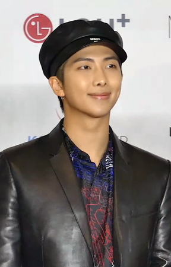

Состав
Джин (Ким Сокджин) - Вокалист, вижуал

Шуга (Мин Юнги) - Ведущий рэпер


RM (Ким Намджун) - Лидер, главный рэпер

Чимин (Пак Чимин) - Ведущий танцор, ведущий вокалист
V (Ким Тэхён) - Ведущий танцор, вокалист
Чонгук (Чон Чонгук) - Главный вокалист, ведущий танцор, саб-рэпер, центр, макнэ